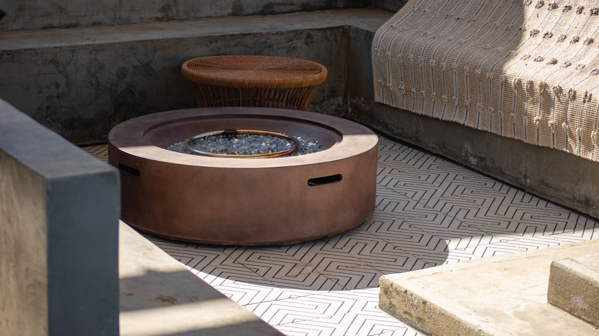

Fire pit instructions & maintenance

Welcome to our cozy outdoor space featuring a gas fire pit! Please enjoy the warmth and ambiance responsibly. Follow the provided instructions to safely operate the fire pit, ensuring a delightful experience for all. If you have any questions or concerns, feel free to reach out to us. Thank you for being our guest and enjoy your time by the fire!
To Turn On
Plug the Gas Tank
Ensure the gas tank is securely connected to the fire pit.
Turn the valve on the gas tank counterclockwise to open it fully.
Locate the gas valve on the fire pit and push it to allow gas flow.
Hold a lighter near the gas exit point on the fire pit
Turn the gas wheel on the fire pit to open the valve slightly
Once lit, adjust the flame intensity using the gas valve on the fire pit.
Exercise caution and avoid overextending the flame.
To Turn Off
To turn off the fire pit, close the gas valve on both the fire pit and the gas tank.
Allow the fire pit to cool down completely before covering or moving it.
Always keep flammable materials away from the fire pit.
Never leave the fire pit unattended while in use.
If you smell gas or suspect a leak, turn off the gas immediately and contact the host for assistance.
By following these steps, you can safely enjoy the ambiance and warmth of the gas fire pit.